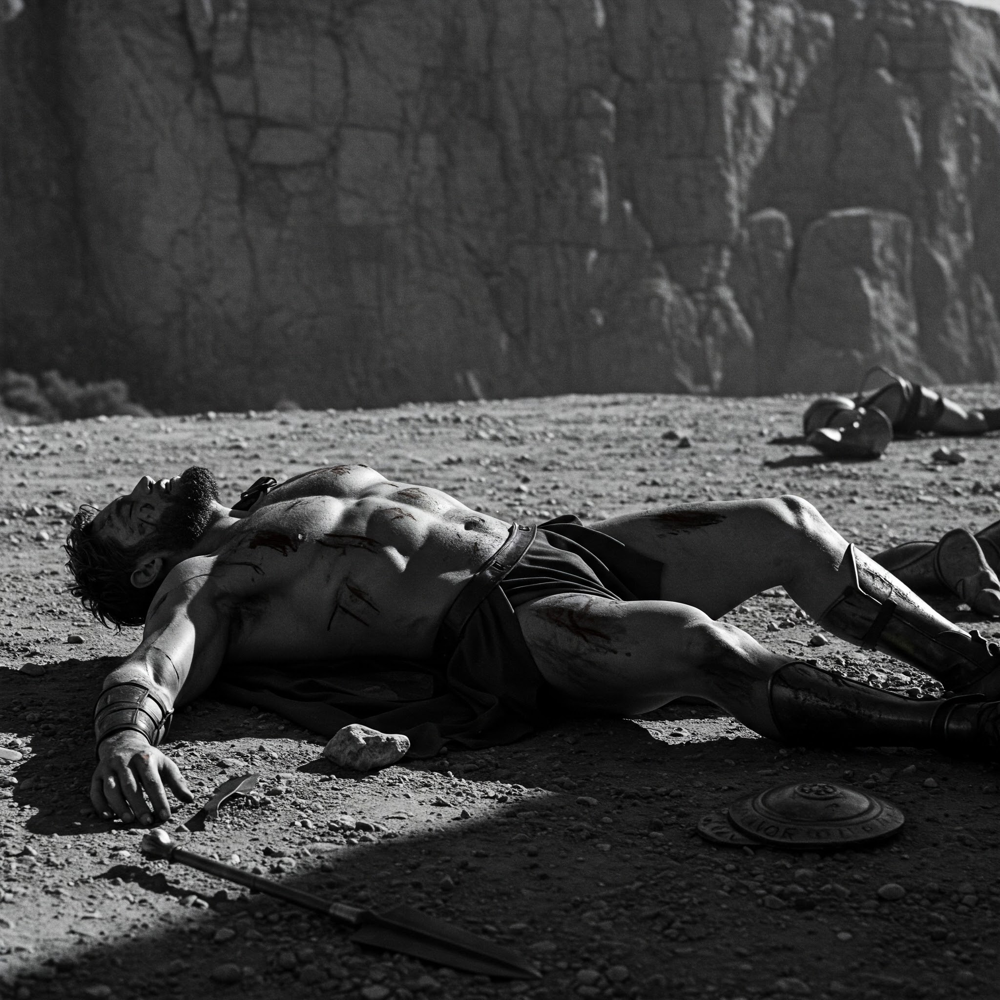

El camino del héroe nunca es fácil...
Has luchado con valentía, enfrentado obstáculos con determinación y desafiado lo imposible. Sin embargo, hasta los más grandes héroes encuentran dificultades en su travesía.
Pero no es el fracaso lo que define a un verdadero héroe, sino su capacidad de levantarse y volver a intentarlo. Heracles no conquistó sus trabajos en un solo intento—su fuerza provenía de su perseverancia.
Así que toma aire, afila tu ingenio y prepárate. La gloria te espera en la próxima batalla.
¿Volverás a intentarlo?